University Vision
To become an ASEAN Premier State University by 2025. (BOR No. 119,s.2020 Revised PSU Vision)
University Mission
The Pangasinan State University, through instruction, research, extension and production, commits to develop highly principled, morally upright, innovative and globally competent individuals capable of meeting the needs of industry, public service and civil society.
Quality Policy
The Pangasinan State University shall be recognized as an ASEAN premier state university that provides quality education and satisfactory service delivery through instruction, research, extension and production.
We commit our expertise and resources to produce professionals who meet the expectations of the industry and other interested parties in the national and international community.
We shall continuously improve our operations in response to changing environment and in support of the institution’s strategic direction.
Institutional Learning Outcomes
The Pangasinan State University Institutional Learning Outcomes (PSU ILO) are the qualities that PSUnians must possess. These outcomes are anchored on the following core values: Accountability and Transparency, Credibility and Integrity, Competence and Commitment to Achieve, Excellence in Service Delivery, Social and Environmental Responsiveness, and Spirituality – (ACCESS).
Anchored on these core values, the PSU graduates are able to:
Demonstrate through institutional mechanisms, systems, policies, and processes which are reflective of transparency, equity, participatory decision making, and accountability;
Engage in relevant, comprehensive and sustainable development initiatives through multiple perspectives in decisions and actions that build personal and professional credibility and integrity.
Set challenging goals and tasks with determination and sense of urgency which provide continuous improvement and producing quality outputs leading to inclusive growth;
Exhibit life-long learning and global competency proficiency in communication skills, inter/interpersonal skills, entrepreneurial skills, innovative mindset, research and production initiatives and capability in meeting the industry requirements of local, ASEAN and international human capital market through relevant and comprehensive programs;
Display, socially and environmentally responsive organizational culture, which ensures higher productivity among the university constituents and elevate the welfare of the multi-sectoral communities and;